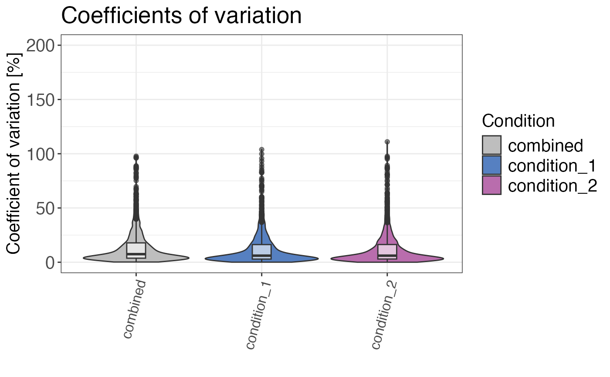

Calculates and plots the coefficients of variation for the selected grouping.
qc_cvs(
data,
grouping,
condition,
intensity,
plot = TRUE,
plot_style = "density"
)a data frame containing at least peptide, precursor or protein identifiers, information on conditions and intensity values for each peptide, precursor or protein.
a character column in the data data frame that contains the grouping
variables (e.g. peptides, precursors or proteins).
a column in the data data frame that contains condition information
(e.g. "treated" and "control").
a numeric column in the data data frame that contains the corresponding
raw or untransformed normalised intensity values for each peptide or precursor.
a logical value that indicates whether the result should be plotted.
a character value that indicates the plotting style. plot_style = "boxplot"
plots a boxplot, whereas plot_style = "density" plots the CV density distribution.
plot_style = "violin" returns a violin plot. Default is plot_style = "density".
Either a data frame with the median CVs in % or a plot showing the distribution of the CVs is returned.
# Load libraries
library(dplyr)
set.seed(123) # Makes example reproducible
# Create example data
data <- create_synthetic_data(
n_proteins = 100,
frac_change = 0.05,
n_replicates = 3,
n_conditions = 2,
method = "effect_random"
) %>%
mutate(intensity_non_log2 = 2^peptide_intensity_missing)
# Calculate coefficients of variation
qc_cvs(
data = data,
grouping = peptide,
condition = condition,
intensity = intensity_non_log2,
plot = FALSE
)
#> # A tibble: 2 × 3
#> condition median_cv median_cv_combined
#> <chr> <dbl> <dbl>
#> 1 condition_2 6.06 7.49
#> 2 condition_1 6.07 7.49
# Plot coefficients of variation
# Different plot styles are available
qc_cvs(
data = data,
grouping = peptide,
condition = condition,
intensity = intensity_non_log2,
plot = TRUE,
plot_style = "violin"
)
